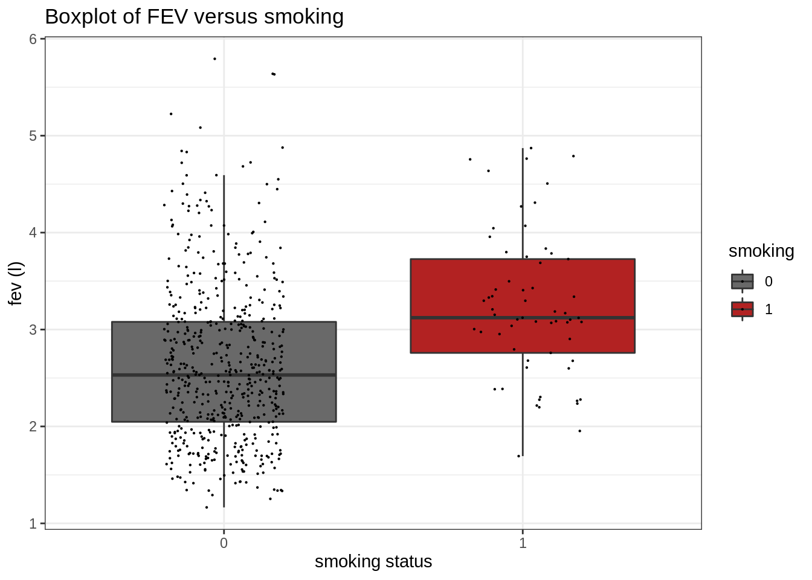
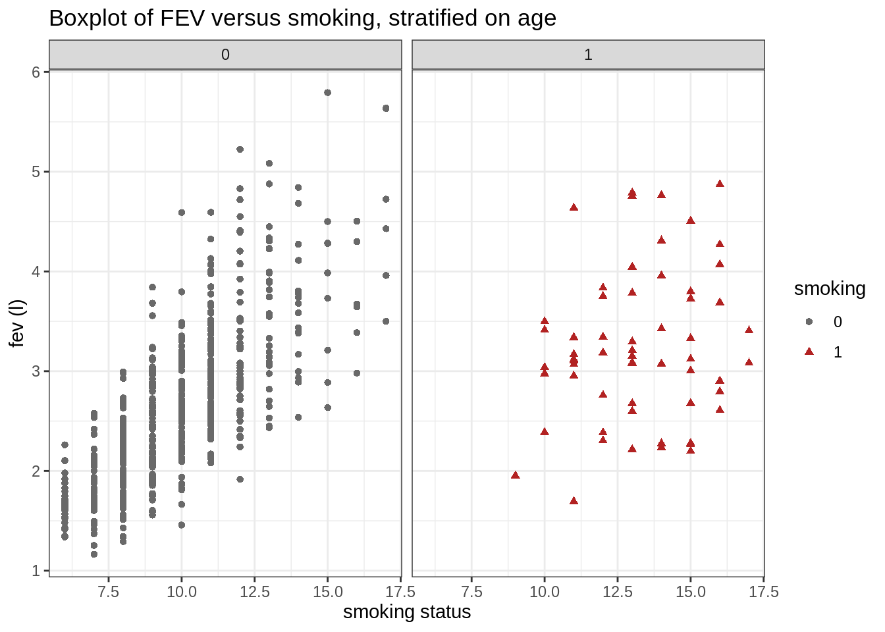
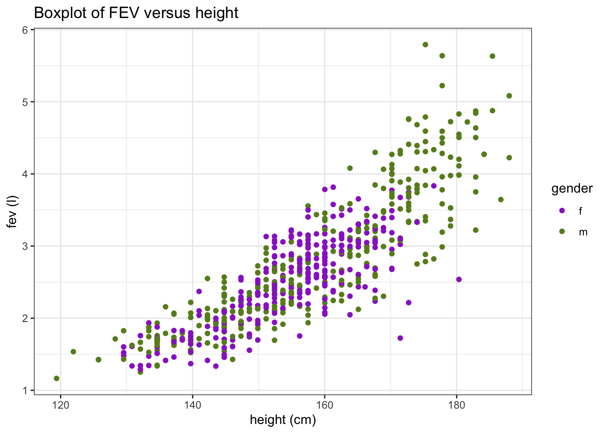
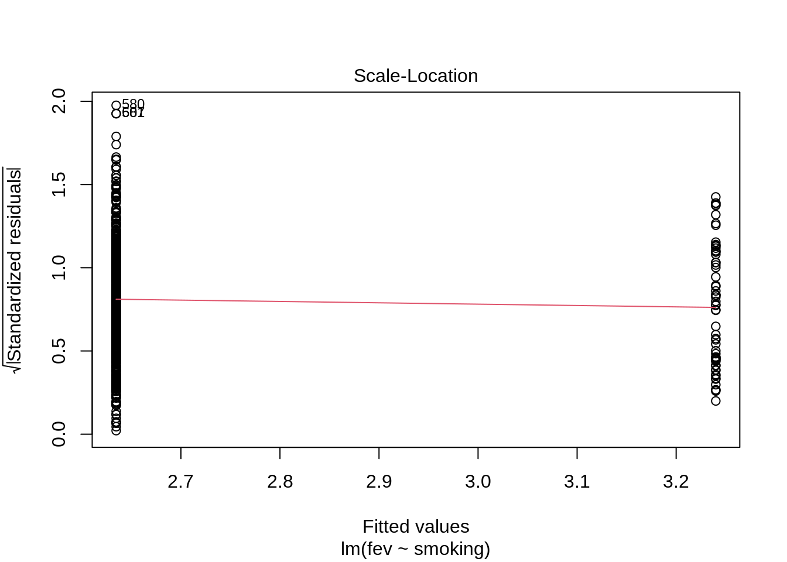
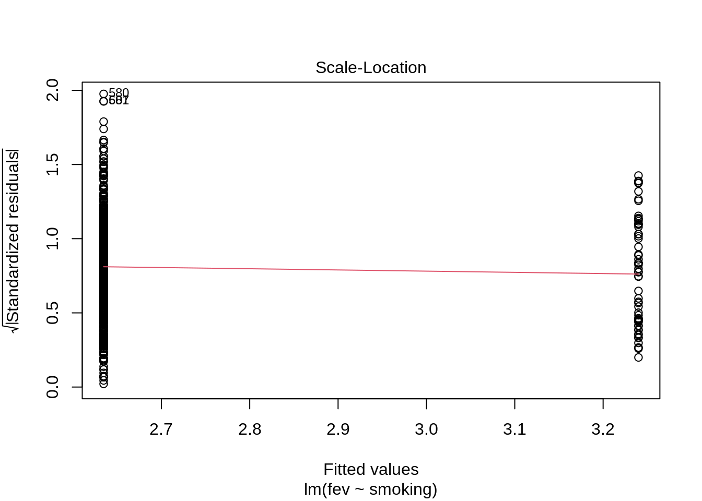

As an exercise on linear regression, we will analyse the FEV dataset.
The FEV dataset
The FEV, which is an acronym for forced expiratory volume, is a measure of how much air a person can exhale (in liters) during a forced breath. In this dataset, the FEV of 606 children, between the ages of 6 and 17, were measured. The dataset also provides additional information on these children: their age, their height, their gender and, most importantly, whether the child is a smoker or a non-smoker.
The overarching goal of this experiment was to find out if smoking has an effect on the FEV of children.
Load the required libraries
Import data
fev <- read_tsv("https://raw.githubusercontent.com/statOmics/PSLSData/main/fev.txt")
## Rows: 606 Columns: 5
## ── Column specification ──────────────────────────────────────────────
## Delimiter: "\t"
## chr (1): gender
## dbl (4): age, fev, height, smoking
##
## ℹ Use `spec()` to retrieve the full column specification for this data.
## ℹ Specify the column types or set `show_col_types = FALSE` to quiet this message.
There are a few things in the formatting of the data that can be improved upon:
Both the gender and smoking can be transformed to factors.
The height variable is written in inches. Assuming that this audience is mainly European, inches are hard to interpret. Let’s add a new column, height_cm, with the values converted to centimeter using the mutate function.
fev <- fev %>%
mutate(gender = as.factor(gender)) %>%
mutate(smoking = as.factor(smoking)) %>%
mutate(height_cm = height * 2.54)
head(fev)
Data Exploration
Now, let’s make a first explorative boxplot, showing only the FEV for both smoking categories.
fev %>%
ggplot(aes(x = smoking, y = fev, fill = smoking)) +
scale_fill_manual(values = c("dimgrey", "firebrick")) +
theme_bw() +
geom_boxplot(outlier.shape = NA) +
geom_jitter(width = 0.2, size = 0.1) +
ggtitle("Boxplot of FEV versus smoking") +
ylab("fev (l)") +
xlab("smoking status")

Did you expect these results?
It appears that children that smoke have a higher median FEV than children that do not smoke. Should we change legislations worldwide and make smoking obligatory for children?
Maybe there is something else going on in the data. Now, we will generate a similar plot, but we will stratify the data based on age (age as factor).
fev %>%
ggplot(aes(
x = age,
y = fev,
color = smoking,
pch = smoking
)) +
facet_grid(cols = vars(smoking)) +
theme_bw() +
scale_color_manual(values = c("dimgrey", "firebrick")) +
geom_point(fill = "white") +
ggtitle("Boxplot of FEV versus smoking, stratified on age") +
ylab("fev (l)") +
xlab("smoking status")

This plot seems to already give us a more plausible picture. First, it seems that we do not have any smoking children of ages 6, 7 or 8. Second, when looking at the results per age “category”, it seems no longer the case that smokers have a much higher FEV than non-smokers; for the higher ages, the contrary seems true.
This shows that taking into account confounders (in this case) is crucial! If we simply analyse the dataset based on the smoking status and FEV values only, our inference might be incorrect.
Can we provide an even better visualization of the data, taking into account more useful explanatory variables with respect to the FEV?
fev %>%
ggplot(aes(
x = age,
y = fev,
color = smoking,
pch = smoking
)) +
facet_grid(cols = vars(smoking), rows = vars(gender)) +
theme_bw() +
scale_color_manual(values = c("dimgrey", "firebrick")) +
geom_point(fill = "white") +
ggtitle("Boxplot of FEV versus smoking, stratified on age") +
ylab("fev (l)") +
xlab("smoking status")

This plot holds one extra level of information, the gender of the child. Especially for higher ages, the median FEV is higher for males as compared to females.
The only source of information that is lacking is height. To look at the effect of height, we could simply make a scatterplot displaying the FEV in function of a child’s height (in cm). Additionally, we could color the dots based on gender.
fev %>%
ggplot(aes(x = height_cm, y = fev, color = gender)) +
geom_point() +
scale_color_manual(values = c("darkorchid", "olivedrab4")) +
theme_bw() +
ggtitle("Boxplot of FEV versus height") +
ylab("fev (l)") +
xlab("height (cm)")

There is a clear relationship between height and FEV. In addition, we see that for the large height values (>175cm), we mainly find male subjects.
Linear regression analysis
Assumptions of linear regression
List the assumptions:
- The observations are independent
- Linearity between the response and predictor variable
- The residues of the model must be normally distributed
- Homoscedasticity of the data
The subjects are sampled randomly from the population and can be assumed to be independent.
model <- lm(fev ~ smoking, data = fev)
## display the diagnostic plots of the model
plot(model)

 

We have four diagnostic plots:
Linearity with the Residuals vs fitted plot
- predictor of predictions \(\hat\beta_0+\hat\beta_1 x\) on \(X\)-axis
- residuals on \(Y\)-as \[e_i=y_i-\hat{g}(x_i)=y_i-\hat\beta_0-\hat\beta_1\times x_i,\] However, because smoking is a factor, the predictor variable \(x\) in the model is a dummy variable that can only take two values (0: non-smoking or 1: smoking).
Normal Q-Q
- QQ-plot of the residuals \(e_i\).
The residuals of the linear regression model should be normally distributed. Based on the second diagnostic plot, the normality assumption is not met.
Homoscedasticity
- Square-root of the absolute value of standardized residuals in function of the fitted values
To meet the third assumption of linear regression, the variance on the Square-root of the absolute value of standardized residuals must be similar over the entire range of fitted values.
However, because smoking is a factor the predictor variable \(x\) in the model is a dummy variable that can only take two values (0: non-smoking or 1: smoking). So it is better to check this assumption using boxplots. In the data exploration we noticed that there is no big difference in the IQR range between smokers and non smokers.
Conclusion
Interpretation on the log scale
Currently, all the outcomes should be interpreted on the log-scale. Indeed, since we are now modelling the \(\log_{2}\) FEV
We may interpret the output as follows:
Smoking pupils on average have a log\(_{2}\) FEV that is on average 0.33 higher than non-smoking pupils (95% CI [0.21, 0.44]). This difference is extremely significant on the 5% significance level (p << 0.001).
The average log\(_{2}\) of FEV for children that do not smoke is 0.33 (95% CI [1.3, 1.37]).
Interpretation on the original scale
The interpretation the log-scale is quite difficult. However, if we backtransform we get an interpretation in terms of geometric means and fold changes.
2^(log.model$coefficients)
## (Intercept) smoking1
## 2.516487 1.253463
and of their confidence intervals:
## 2.5 % 97.5 %
## (Intercept) 2.454484 2.580058
## smoking1 1.158676 1.356004
Now, we can interpret the results in terms of the geometric mean:
The geometric mean of the forced expiratory volume is a factor 1.25 larger for smoking pupil than for non-smoking pupil (95% CI [1.16, 1.36]). This difference is extremely significant (p << 0.001).
Note that we can also interpret as follows because the factor is between 1 and 2.
The the forced expiratory volume is on average 25% larger for smoking pupils than for non-smoking pupils (95% CI [16, 36]).
NOTE THAT THE CONCLUSION IS WRONG BECAUSE THE TWO GROUPS OF PUPILS ARE NOT COMPARABLE. THERE IS CONFOUNDING!
Indeed, the FEV study is an observational study: smoking pupils are on average older than non-smoking pupils and age is associated with both the smoking behavior and long capacity. If we do not account for age the age effect is partially captured in the estimated effect for smoking!
The geometric mean of the forced experatory volume for non-smoking pupils is 2.52l (95% CI [2.45, 2.58]l). This value is extermely significantly larger than 1l (p <<< 0.001). Note, that the statistical test on the intercept is typically not reported.
In the tutorial of multiple regression, we will revisit this exercise and do an analysis where we correct for this confounder. More specifically, we will there study the association between smoking and FEV while accounting for differences in the age, height and gender of the children.
LS0tCnRpdGxlOiAiRXhlZXJjaXNlIDYuMjogTGluZWFyIHJlZ3Jlc3Npb24gb24gdGhlIEZFViBkYXRhc2V0IC0gc29sdXRpb24iCmF1dGhvcjogIkxpZXZlbiBDbGVtZW50IGFuZCBKZXJvZW4gR2lsaXMiCmRhdGU6ICJzdGF0T21pY3MsIEdoZW50IFVuaXZlcnNpdHkgKGh0dHBzOi8vc3RhdG9taWNzLmdpdGh1Yi5pbykiCi0tLQoKQXMgYW4gZXhlcmNpc2Ugb24gbGluZWFyIHJlZ3Jlc3Npb24sIHdlIHdpbGwgYW5hbHlzZSB0aGUgRkVWIGRhdGFzZXQuCgojIFRoZSBGRVYgZGF0YXNldAoKVGhlIEZFViwgd2hpY2ggaXMgYW4gYWNyb255bSBmb3IgZm9yY2VkIGV4cGlyYXRvcnkgdm9sdW1lLAppcyBhIG1lYXN1cmUgb2YgaG93IG11Y2ggYWlyIGEgcGVyc29uIGNhbiBleGhhbGUgKGluIGxpdGVycykKZHVyaW5nIGEgZm9yY2VkIGJyZWF0aC4gSW4gdGhpcyBkYXRhc2V0LCB0aGUgRkVWIG9mIDYwNiBjaGlsZHJlbiwKYmV0d2VlbiB0aGUgYWdlcyBvZiA2IGFuZCAxNywgd2VyZSBtZWFzdXJlZC4gVGhlIGRhdGFzZXQKYWxzbyBwcm92aWRlcyBhZGRpdGlvbmFsIGluZm9ybWF0aW9uIG9uIHRoZXNlIGNoaWxkcmVuOgp0aGVpciBgYWdlYCwgdGhlaXIgYGhlaWdodGAsIHRoZWlyIGBnZW5kZXJgIGFuZCwgbW9zdAppbXBvcnRhbnRseSwgd2hldGhlciB0aGUgY2hpbGQgaXMgYSBzbW9rZXIgb3IgYSBub24tc21va2VyLgoKVGhlIG92ZXJhcmNoaW5nIGdvYWwgb2YgdGhpcyBleHBlcmltZW50IHdhcyB0byBmaW5kIG91dCBpZgpzbW9raW5nIGhhcyBhbiBlZmZlY3Qgb24gdGhlIEZFViBvZiBjaGlsZHJlbi4KCiMgTG9hZCB0aGUgcmVxdWlyZWQgbGlicmFyaWVzCgpgYGB7ciwgbWVzc2FnZSA9IEZBTFNFfQpsaWJyYXJ5KHRpZHl2ZXJzZSkKYGBgCgojIEltcG9ydCBkYXRhCgpgYGB7cn0KZmV2IDwtIHJlYWRfdHN2KCJodHRwczovL3Jhdy5naXRodWJ1c2VyY29udGVudC5jb20vc3RhdE9taWNzL1BTTFNEYXRhL21haW4vZmV2LnR4dCIpCmhlYWQoZmV2KQpgYGAKClRoZXJlIGFyZSBhIGZldyB0aGluZ3MgaW4gdGhlIGZvcm1hdHRpbmcgb2YgdGhlCmRhdGEgdGhhdCBjYW4gYmUgaW1wcm92ZWQgdXBvbjoKCjEuIEJvdGggdGhlIGBnZW5kZXJgIGFuZCBgc21va2luZ2AgY2FuIGJlIHRyYW5zZm9ybWVkIHRvCmZhY3RvcnMuCgoyLiBUaGUgYGhlaWdodGAgdmFyaWFibGUgaXMgd3JpdHRlbiBpbiBpbmNoZXMuIEFzc3VtaW5nIHRoYXQKdGhpcyBhdWRpZW5jZSBpcyBtYWlubHkgRXVyb3BlYW4sIGluY2hlcyBhcmUgaGFyZCB0bwppbnRlcnByZXQuIExldCdzIGFkZCBhIG5ldyBjb2x1bW4sIGBoZWlnaHRfY21gLCB3aXRoIHRoZSB2YWx1ZXMKY29udmVydGVkIHRvIGNlbnRpbWV0ZXIgdXNpbmcgdGhlIGBtdXRhdGVgIGZ1bmN0aW9uLgoKYGBge3J9CmZldiA8LSBmZXYgJT4lCiAgbXV0YXRlKGdlbmRlciA9IGFzLmZhY3RvcihnZW5kZXIpKSAlPiUKICBtdXRhdGUoc21va2luZyA9IGFzLmZhY3RvcihzbW9raW5nKSkgJT4lCiAgbXV0YXRlKGhlaWdodF9jbSA9IGhlaWdodCAqIDIuNTQpCgpoZWFkKGZldikKYGBgCgojIERhdGEgRXhwbG9yYXRpb24KCk5vdywgbGV0J3MgbWFrZSBhIGZpcnN0IGV4cGxvcmF0aXZlIGJveHBsb3QsIHNob3dpbmcKb25seSB0aGUgRkVWIGZvciBib3RoIHNtb2tpbmcgY2F0ZWdvcmllcy4KCmBgYHtyfQpmZXYgJT4lCiAgZ2dwbG90KGFlcyh4ID0gc21va2luZywgeSA9IGZldiwgZmlsbCA9IHNtb2tpbmcpKSArCiAgc2NhbGVfZmlsbF9tYW51YWwodmFsdWVzID0gYygiZGltZ3JleSIsICJmaXJlYnJpY2siKSkgKwogIHRoZW1lX2J3KCkgKwogIGdlb21fYm94cGxvdChvdXRsaWVyLnNoYXBlID0gTkEpICsKICBnZW9tX2ppdHRlcih3aWR0aCA9IDAuMiwgc2l6ZSA9IDAuMSkgKwogIGdndGl0bGUoIkJveHBsb3Qgb2YgRkVWIHZlcnN1cyBzbW9raW5nIikgKwogIHlsYWIoImZldiAobCkiKSArCiAgeGxhYigic21va2luZyBzdGF0dXMiKQpgYGAKCkRpZCB5b3UgZXhwZWN0IHRoZXNlIHJlc3VsdHM/CgpJdCBhcHBlYXJzIHRoYXQgY2hpbGRyZW4gdGhhdCBzbW9rZSBoYXZlIGEgaGlnaGVyCm1lZGlhbiBGRVYgdGhhbiBjaGlsZHJlbiB0aGF0IGRvIG5vdCBzbW9rZS4KU2hvdWxkIHdlIGNoYW5nZSBsZWdpc2xhdGlvbnMgd29ybGR3aWRlIGFuZCBtYWtlCnNtb2tpbmcgb2JsaWdhdG9yeSBmb3IgY2hpbGRyZW4/CgpNYXliZSB0aGVyZSBpcyBzb21ldGhpbmcgZWxzZSBnb2luZyBvbiBpbiB0aGUgZGF0YS4KTm93LCB3ZSB3aWxsIGdlbmVyYXRlIGEgc2ltaWxhciBwbG90LCBidXQgd2Ugd2lsbApzdHJhdGlmeSB0aGUgZGF0YSBiYXNlZCBvbiBhZ2UgKGFnZSBhcyBmYWN0b3IpLgoKYGBge3J9CmZldiAlPiUKICBnZ3Bsb3QoYWVzKAogICAgeCA9IGFnZSwKICAgIHkgPSBmZXYsCiAgICBjb2xvciA9IHNtb2tpbmcsCiAgICBwY2ggPSBzbW9raW5nCiAgKSkgKwogIGZhY2V0X2dyaWQoY29scyA9IHZhcnMoc21va2luZykpICsKICB0aGVtZV9idygpICsKICBzY2FsZV9jb2xvcl9tYW51YWwodmFsdWVzID0gYygiZGltZ3JleSIsICJmaXJlYnJpY2siKSkgKwogIGdlb21fcG9pbnQoZmlsbCA9ICJ3aGl0ZSIpICsKICBnZ3RpdGxlKCJCb3hwbG90IG9mIEZFViB2ZXJzdXMgc21va2luZywgc3RyYXRpZmllZCBvbiBhZ2UiKSArCiAgeWxhYigiZmV2IChsKSIpICsKICB4bGFiKCJzbW9raW5nIHN0YXR1cyIpCmBgYAoKVGhpcyBwbG90IHNlZW1zIHRvIGFscmVhZHkgZ2l2ZSB1cyBhIG1vcmUKcGxhdXNpYmxlIHBpY3R1cmUuIEZpcnN0LCBpdCBzZWVtcyB0aGF0IHdlIGRvIG5vdCBoYXZlCmFueSBzbW9raW5nIGNoaWxkcmVuIG9mIGFnZXMgNiwgNyBvciA4LiBTZWNvbmQsIHdoZW4KbG9va2luZyBhdCB0aGUgcmVzdWx0cyBwZXIgYWdlICJjYXRlZ29yeSIsIGl0IHNlZW1zCm5vIGxvbmdlciB0aGUgY2FzZSB0aGF0IHNtb2tlcnMgaGF2ZSBhIG11Y2ggaGlnaGVyIEZFVgp0aGFuIG5vbi1zbW9rZXJzOyBmb3IgdGhlIGhpZ2hlciBhZ2VzLCB0aGUgY29udHJhcnkKc2VlbXMgdHJ1ZS4KClRoaXMgc2hvd3MgdGhhdCB0YWtpbmcgaW50byBhY2NvdW50IGNvbmZvdW5kZXJzCihpbiB0aGlzIGNhc2UpIGlzIGNydWNpYWwhIElmIHdlIHNpbXBseSBhbmFseXNlIHRoZSBkYXRhc2V0IGJhc2VkIG9uCnRoZSBzbW9raW5nIHN0YXR1cyBhbmQgRkVWIHZhbHVlcyBvbmx5LCBvdXIgaW5mZXJlbmNlIG1pZ2h0CmJlIGluY29ycmVjdC4KCkNhbiB3ZSBwcm92aWRlIGFuIGV2ZW4gYmV0dGVyIHZpc3VhbGl6YXRpb24gb2YgdGhlIGRhdGEsIHRha2luZwppbnRvIGFjY291bnQgbW9yZSB1c2VmdWwgZXhwbGFuYXRvcnkgdmFyaWFibGVzIHdpdGggcmVzcGVjdAp0byB0aGUgRkVWPwoKYGBge3J9CmZldiAlPiUKICBnZ3Bsb3QoYWVzKAogICAgeCA9IGFnZSwKICAgIHkgPSBmZXYsCiAgICBjb2xvciA9IHNtb2tpbmcsCiAgICBwY2ggPSBzbW9raW5nCiAgKSkgKwogIGZhY2V0X2dyaWQoY29scyA9IHZhcnMoc21va2luZyksIHJvd3MgPSB2YXJzKGdlbmRlcikpICsKICB0aGVtZV9idygpICsKICBzY2FsZV9jb2xvcl9tYW51YWwodmFsdWVzID0gYygiZGltZ3JleSIsICJmaXJlYnJpY2siKSkgKwogIGdlb21fcG9pbnQoZmlsbCA9ICJ3aGl0ZSIpICsKICBnZ3RpdGxlKCJCb3hwbG90IG9mIEZFViB2ZXJzdXMgc21va2luZywgc3RyYXRpZmllZCBvbiBhZ2UiKSArCiAgeWxhYigiZmV2IChsKSIpICsKICB4bGFiKCJzbW9raW5nIHN0YXR1cyIpCmBgYAoKVGhpcyBwbG90IGhvbGRzIG9uZSBleHRyYSBsZXZlbCBvZiBpbmZvcm1hdGlvbiwgdGhlIGdlbmRlcgpvZiB0aGUgY2hpbGQuIEVzcGVjaWFsbHkgZm9yIGhpZ2hlciBhZ2VzLCB0aGUgbWVkaWFuIEZFVgppcyBoaWdoZXIgZm9yIG1hbGVzIGFzIGNvbXBhcmVkIHRvIGZlbWFsZXMuCgpUaGUgb25seSBzb3VyY2Ugb2YgaW5mb3JtYXRpb24gdGhhdCBpcyBsYWNraW5nIGlzIGBoZWlnaHRgLgpUbyBsb29rIGF0IHRoZSBlZmZlY3Qgb2YgaGVpZ2h0LCB3ZSBjb3VsZCBzaW1wbHkgbWFrZSBhCnNjYXR0ZXJwbG90IGRpc3BsYXlpbmcgdGhlIEZFViBpbiBmdW5jdGlvbiBvZiBhIGNoaWxkJ3MKaGVpZ2h0IChpbiBjbSkuIEFkZGl0aW9uYWxseSwgd2UgY291bGQgY29sb3IgdGhlIGRvdHMgYmFzZWQKb24gZ2VuZGVyLgoKYGBge3J9CmZldiAlPiUKICBnZ3Bsb3QoYWVzKHggPSBoZWlnaHRfY20sIHkgPSBmZXYsIGNvbG9yID0gZ2VuZGVyKSkgKwogIGdlb21fcG9pbnQoKSArCiAgc2NhbGVfY29sb3JfbWFudWFsKHZhbHVlcyA9IGMoImRhcmtvcmNoaWQiLCAib2xpdmVkcmFiNCIpKSArCiAgdGhlbWVfYncoKSArCiAgZ2d0aXRsZSgiQm94cGxvdCBvZiBGRVYgdmVyc3VzIGhlaWdodCIpICsKICB5bGFiKCJmZXYgKGwpIikgKwogIHhsYWIoImhlaWdodCAoY20pIikKYGBgCgpUaGVyZSBpcyBhIGNsZWFyIHJlbGF0aW9uc2hpcCBiZXR3ZWVuIGhlaWdodCBhbmQgRkVWLgpJbiBhZGRpdGlvbiwgd2Ugc2VlIHRoYXQgZm9yIHRoZSBsYXJnZSBoZWlnaHQgdmFsdWVzCig+MTc1Y20pLCB3ZSBtYWlubHkgZmluZCBtYWxlIHN1YmplY3RzLgoKIyBMaW5lYXIgcmVncmVzc2lvbiBhbmFseXNpcwoKIyMgQXNzdW1wdGlvbnMgb2YgbGluZWFyIHJlZ3Jlc3Npb24KCkxpc3QgdGhlIGFzc3VtcHRpb25zOgoKMS4gVGhlIG9ic2VydmF0aW9ucyBhcmUgaW5kZXBlbmRlbnQKMi4gTGluZWFyaXR5IGJldHdlZW4gdGhlIHJlc3BvbnNlIGFuZCBwcmVkaWN0b3IgdmFyaWFibGUKMy4gVGhlIHJlc2lkdWVzIG9mIHRoZSBtb2RlbCBtdXN0IGJlIG5vcm1hbGx5IGRpc3RyaWJ1dGVkCjQuIEhvbW9zY2VkYXN0aWNpdHkgb2YgdGhlIGRhdGEKClRoZSBzdWJqZWN0cyBhcmUgc2FtcGxlZCByYW5kb21seSBmcm9tIHRoZSBwb3B1bGF0aW9uIGFuZCBjYW4gYmUgYXNzdW1lZCB0byBiZQppbmRlcGVuZGVudC4KCmBgYHtyfQptb2RlbCA8LSBsbShmZXYgfiBzbW9raW5nLCBkYXRhID0gZmV2KQoKIyMgZGlzcGxheSB0aGUgZGlhZ25vc3RpYyBwbG90cyBvZiB0aGUgbW9kZWwKcGxvdChtb2RlbCkKYGBgCgpXZSBoYXZlIGZvdXIgZGlhZ25vc3RpYyBwbG90czoKCiMjIyBMaW5lYXJpdHkgd2l0aCB0aGUgUmVzaWR1YWxzIHZzIGZpdHRlZCBwbG90CgotIHByZWRpY3RvciBvZiBwcmVkaWN0aW9ucyAkXGhhdFxiZXRhXzArXGhhdFxiZXRhXzEgeCQgb24gJFgkLWF4aXMKLSAqcmVzaWR1YWxzKiBvbiAkWSQtYXMKJCRlX2k9eV9pLVxoYXR7Z30oeF9pKT15X2ktXGhhdFxiZXRhXzAtXGhhdFxiZXRhXzFcdGltZXMgeF9pLCQkCkhvd2V2ZXIsIGJlY2F1c2Ugc21va2luZyBpcyBhIGZhY3RvciwgdGhlIHByZWRpY3RvciB2YXJpYWJsZSAkeCQgaW4gdGhlIG1vZGVsIGlzCmEgZHVtbXkgdmFyaWFibGUgdGhhdCBjYW4gb25seSB0YWtlIHR3byB2YWx1ZXMgKDA6IG5vbi1zbW9raW5nIG9yIDE6IHNtb2tpbmcpLgoKIyMjIE5vcm1hbCBRLVEKCi0gUVEtcGxvdCBvZiB0aGUgcmVzaWR1YWxzICRlX2kkLgoKVGhlIHJlc2lkdWFscyBvZiB0aGUgbGluZWFyIHJlZ3Jlc3Npb24gbW9kZWwgc2hvdWxkIGJlIG5vcm1hbGx5CmRpc3RyaWJ1dGVkLiBCYXNlZCBvbiB0aGUgc2Vjb25kIGRpYWdub3N0aWMgcGxvdCwgdGhlIG5vcm1hbGl0eQphc3N1bXB0aW9uIGlzIG5vdCBtZXQuCgojIyMgSG9tb3NjZWRhc3RpY2l0eQoKLSBTcXVhcmUtcm9vdCBvZiB0aGUgYWJzb2x1dGUgdmFsdWUgb2Ygc3RhbmRhcmRpemVkIHJlc2lkdWFscwppbiBmdW5jdGlvbiBvZiB0aGUgZml0dGVkIHZhbHVlcwoKVG8gbWVldCB0aGUgdGhpcmQgYXNzdW1wdGlvbiBvZiBsaW5lYXIgcmVncmVzc2lvbiwgdGhlIHZhcmlhbmNlCm9uIHRoZSBfU3F1YXJlLXJvb3Qgb2YgdGhlIGFic29sdXRlIHZhbHVlIG9mIHN0YW5kYXJkaXplZCByZXNpZHVhbHNfCm11c3QgYmUgc2ltaWxhciBvdmVyIHRoZSBlbnRpcmUgcmFuZ2Ugb2YgZml0dGVkIHZhbHVlcy4KCkhvd2V2ZXIsIGJlY2F1c2Ugc21va2luZyBpcyBhIGZhY3RvciB0aGUgcHJlZGljdG9yIHZhcmlhYmxlICR4JCBpbiB0aGUgbW9kZWwgaXMKYSBkdW1teSB2YXJpYWJsZSB0aGF0IGNhbiBvbmx5IHRha2UgdHdvIHZhbHVlcyAoMDogbm9uLXNtb2tpbmcgb3IgMTogc21va2luZykuClNvIGl0IGlzIGJldHRlciB0byBjaGVjayB0aGlzIGFzc3VtcHRpb24gdXNpbmcgYm94cGxvdHMuIEluIHRoZSBkYXRhIGV4cGxvcmF0aW9uCndlIG5vdGljZWQgdGhhdCB0aGVyZSBpcyBubyBiaWcgZGlmZmVyZW5jZSBpbiB0aGUgSVFSIHJhbmdlIGJldHdlZW4gc21va2VycyBhbmQKbm9uIHNtb2tlcnMuCgojIyBMb2cgdHJhbnNmb3JtYXRpb24KClRoZSBub3JtYWxpdHkgYXNzdW1wdGlvbiB3YXMgbm90IG1ldC4gT25lIHBvc3NpYmxlIHdheSByZXNvbHZlIHRoaXMgaXMgYnkKcmVseWluZyBvbiB0aGUgY2VudHJhbCBsaW1pdCB0aGVvcmVtOyBnaXZlbiB0aGUgbGFyZ2UgbnVtYmVyIG9mIG9ic2VydmF0aW9ucyBpbgp0aGlzIGRhdGFzZXQsIHdlIHdvdWxkIHN0aWxsIGJlIGFsbG93ZWQgdG8gcGVyZm9ybSB0aGF0IGFzc3VtZSBub3JtYWxpdHkuCkFub3RoZXIgb3B0aW9uIGlzIHRvIHRyeSBhIGxvZy10cmFuc2Zvcm1hdGlvbiBvZiB0aGUgZGF0YS4gSW4gdGhpcyBleGFtcGxlLApsb2ctdHJhbnNmb3JtaW5nIHRoZSBkYXRhIG1ha2VzIHBlcmZlY3Qgc2Vuc2U7IHdlIGNhbiB0aGVuIGludGVycHJldCBkaWZmZXJlbmNlCmluIHRlcm1zIG9mIGxvZyB0cmFuc2Zvcm1lZCBmb2xkIGNoYW5nZXMsIHdoaWNoIGlzIHNlbnNpYmxlIGZvciB2b2x1bWUgZGF0YS4KCkhlcmUsIHdlIGZpdCB0aGUgbG9nLWxpbmVhciBtb2RlbCBhbmQgZ2VuZXJhdGUgZGlhZ25vc3RpYyBwbG90cyBpbiBvcmRlciB0bwphc3Nlc3MgdGhlIGFzc3VtcHRpb25zIGZvciBsaW5lYXIgcmVncmVzc2lvbi4KCmBgYHtyfQpsb2cubW9kZWwgPC0gbG0oZmV2ICU+JSBsb2cyKCkgfiBzbW9raW5nLCBkYXRhID0gZmV2KQpwbG90KGxvZy5tb2RlbCkKYGBgCgpVcG9uIGxvZy10cmFuc2Zvcm1hdGlvbiwgYWxsIHRoZSByZXF1aXJlZCBhc3N1bXB0aW9uIGFyZSBtZXQuCgpMb29rIGF0IHRoZSBvdXRwdXQgb2YgdGhlIGxvZy1saW5lYXIgbW9kZWw6CgpgYGB7cn0Kc3VtbWFyeShsb2cubW9kZWwpCmBgYAoKQ29tcHV0ZSB0aGUgOTUlIGNvbmZpZGVuY2UgaW50ZXJ2YWwgb24gdGhlIG1vZGVsIHBhcmFtZXRlcnM6CgpgYGB7cn0KY29uZmludChsb2cubW9kZWwpCmBgYAoKIyBDb25jbHVzaW9uCgojIyBJbnRlcnByZXRhdGlvbiBvbiB0aGUgbG9nIHNjYWxlCgpDdXJyZW50bHksIGFsbCB0aGUgb3V0Y29tZXMgc2hvdWxkIGJlIGludGVycHJldGVkIG9uIHRoZSBsb2ctc2NhbGUuCkluZGVlZCwgc2luY2Ugd2UgYXJlIG5vdyBtb2RlbGxpbmcgIF90aGUgJFxsb2dfezJ9JCBGRVZfCgpXZSBtYXkgaW50ZXJwcmV0IHRoZSBvdXRwdXQgYXMgZm9sbG93czoKCi0gVGhlIHNsb3BlOgoKU21va2luZyBwdXBpbHMgb24gYXZlcmFnZSBoYXZlIGEgbG9nJF97Mn0kIEZFViB0aGF0IGlzIG9uIGF2ZXJhZ2UKYHIgbG9nLm1vZGVsJGNvZWZbMl0gJT4lIHJvdW5kKC4sMilgIGhpZ2hlciB0aGFuIG5vbi1zbW9raW5nIHB1cGlscyAoOTUlIENJIFtgciBjb25maW50KGxvZy5tb2RlbClbMixdICU+JSByb3VuZCguLDIpYF0pLgpUaGlzIGRpZmZlcmVuY2UgaXMgZXh0cmVtZWx5IHNpZ25pZmljYW50IG9uIHRoZSA1JSBzaWduaWZpY2FuY2UgbGV2ZWwgKHAgPDwgMC4wMDEpLgoKLSBUaGUgaW50ZXJjZXB0OgoKVGhlIGF2ZXJhZ2UgbG9nJF97Mn0kIG9mIEZFViBmb3IgY2hpbGRyZW4gdGhhdApkbyBub3Qgc21va2UgaXMgYHIgbG9nLm1vZGVsJGNvZWZbMl0gJT4lIHJvdW5kKC4sMilgICg5NSUgQ0kgW2ByIGNvbmZpbnQobG9nLm1vZGVsKVsxLF0gJT4lIHJvdW5kKC4sMilgXSkuCgojIyBJbnRlcnByZXRhdGlvbiBvbiB0aGUgb3JpZ2luYWwgc2NhbGUKClRoZSBpbnRlcnByZXRhdGlvbiB0aGUgbG9nLXNjYWxlIGlzIHF1aXRlIGRpZmZpY3VsdC4gSG93ZXZlciwgaWYgd2UgYmFja3RyYW5zZm9ybSB3ZSBnZXQgYW4gaW50ZXJwcmV0YXRpb24gaW4gdGVybXMgb2YgZ2VvbWV0cmljIG1lYW5zIGFuZCBmb2xkIGNoYW5nZXMuCgpgYGB7cn0KMl4obG9nLm1vZGVsJGNvZWZmaWNpZW50cykKYGBgCgphbmQgb2YgdGhlaXIgY29uZmlkZW5jZSBpbnRlcnZhbHM6CgpgYGB7cn0KMl4oY29uZmludChsb2cubW9kZWwpKQpgYGAKCk5vdywgd2UgY2FuIGludGVycHJldCB0aGUgcmVzdWx0cyBpbiB0ZXJtcyBvZiB0aGUgZ2VvbWV0cmljIG1lYW46CgotIFRoZSBzbG9wZToKClRoZSBnZW9tZXRyaWMgbWVhbiBvZiB0aGUgZm9yY2VkIGV4cGlyYXRvcnkgdm9sdW1lIGlzIGEgZmFjdG9yCmByIGxvZy5tb2RlbCRjb2VmZmljaWVudHNbMl0gJT4lIGFicyAlPiUgMl4uICU+JSByb3VuZCgyKWAgbGFyZ2VyIGZvciBzbW9raW5nCnB1cGlsIHRoYW4gZm9yIG5vbi1zbW9raW5nIHB1cGlsCig5NSUgQ0kgW2ByIGNvbmZpbnQobG9nLm1vZGVsKVsyLF0gJT4lIDJeLiAlPiUgYWJzICU+JSByb3VuZCguLDIpYF0pLgpUaGlzIGRpZmZlcmVuY2UgaXMgZXh0cmVtZWx5IHNpZ25pZmljYW50IChwIDw8IDAuMDAxKS4KCk5vdGUgdGhhdCB3ZSBjYW4gYWxzbyBpbnRlcnByZXQgYXMgZm9sbG93cyBiZWNhdXNlIHRoZSBmYWN0b3IgaXMgYmV0d2VlbiAxCmFuZCAyLgoKVGhlIHRoZSBmb3JjZWQgZXhwaXJhdG9yeSB2b2x1bWUgaXMgb24gYXZlcmFnZQpgciAoKGxvZy5tb2RlbCRjb2VmZmljaWVudHNbMl0gJT4lIGFicyAlPiUgMl4uICU+JSByb3VuZCgyKSktMSkqMTAwYCUgbGFyZ2VyIGZvcgpzbW9raW5nIHB1cGlscyB0aGFuIGZvciBub24tc21va2luZyBwdXBpbHMKKDk1JSBDSSBbYHIgKChjb25maW50KGxvZy5tb2RlbClbMixdICU+JSAyXi4gJT4lIGFicyAlPiUgcm91bmQoLiwyKSktMSkqMTAwYF0pLgoKKipOT1RFIFRIQVQgVEhFIENPTkNMVVNJT04gSVMgV1JPTkcgQkVDQVVTRSBUSEUgVFdPIEdST1VQUyBPRiBQVVBJTFMgQVJFIE5PVCoqCioqQ09NUEFSQUJMRS4gVEhFUkUgSVMgQ09ORk9VTkRJTkchKioKCkluZGVlZCwgdGhlIEZFViBzdHVkeSBpcyBhbiBvYnNlcnZhdGlvbmFsIHN0dWR5OiBzbW9raW5nIHB1cGlscyBhcmUgb24gYXZlcmFnZQpvbGRlciB0aGFuIG5vbi1zbW9raW5nIHB1cGlscyBhbmQgYWdlIGlzIGFzc29jaWF0ZWQgd2l0aCBib3RoIHRoZSBzbW9raW5nCmJlaGF2aW9yIGFuZCBsb25nIGNhcGFjaXR5LiBJZiB3ZSBkbyBub3QgYWNjb3VudCBmb3IgYWdlIHRoZSBhZ2UgZWZmZWN0IGlzCnBhcnRpYWxseSBjYXB0dXJlZCBpbiB0aGUgZXN0aW1hdGVkIGVmZmVjdCBmb3Igc21va2luZyEKCi0gVGhlIGludGVyY2VwdDoKClRoZSBnZW9tZXRyaWMgbWVhbiBvZiB0aGUgZm9yY2VkIGV4cGVyYXRvcnkgdm9sdW1lIGZvciBub24tc21va2luZyBwdXBpbHMKaXMgIGByIGxvZy5tb2RlbCRjb2VmZmljaWVudHNbMV0gJT4lIDJeLiAlPiUgcm91bmQoMilgbAooOTUlIENJIFtgciBjb25maW50KGxvZy5tb2RlbClbMSxdICU+JSAyXi4gJT4lIGFicyAlPiUgcm91bmQoLiwyKWBdbCkuClRoaXMgdmFsdWUgaXMgZXh0ZXJtZWx5IHNpZ25pZmljYW50bHkgbGFyZ2VyIHRoYW4gMWwgKHAgPDw8IDAuMDAxKS4gTm90ZSwgdGhhdAp0aGUgc3RhdGlzdGljYWwgdGVzdCBvbiB0aGUgaW50ZXJjZXB0IGlzIHR5cGljYWxseSBub3QgcmVwb3J0ZWQuCgoKSW4gdGhlIHR1dG9yaWFsIG9mIG11bHRpcGxlIHJlZ3Jlc3Npb24sIHdlIHdpbGwgcmV2aXNpdCB0aGlzIGV4ZXJjaXNlIGFuZCBkbwphbiBhbmFseXNpcyB3aGVyZSB3ZSBjb3JyZWN0IGZvciB0aGlzIGNvbmZvdW5kZXIuIE1vcmUgc3BlY2lmaWNhbGx5LCB3ZSB3aWxsCnRoZXJlIHN0dWR5ICB0aGUgYXNzb2NpYXRpb24gYmV0d2VlbiBzbW9raW5nIGFuZCBGRVYgd2hpbGUgYWNjb3VudGluZyBmb3IKZGlmZmVyZW5jZXMgaW4gdGhlIGFnZSwgaGVpZ2h0IGFuZCBnZW5kZXIgb2YgdGhlIGNoaWxkcmVuLgo=